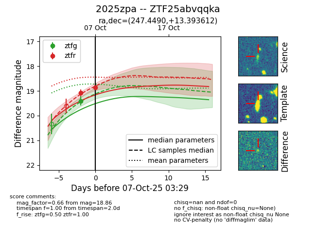
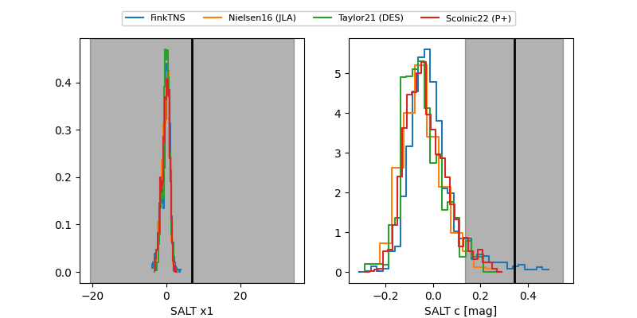

FINK: ZTF25abvqqka
Lasair: ZTF25abvqqka
ALeRCE: ZTF25abvqqka
TNS: 2025zpa
YSE: 2025zpa
ZTF25abvqqka (ztf,fink)
2025zpa (tns,yse)
equatorial (ra, dec) = (247.4490,+13.39361)
galactic (l, b) = (29.2610,+37.39334)


last ztfg=19.40, ztfr=18.86
1 ztfg, 2 ztfr detections